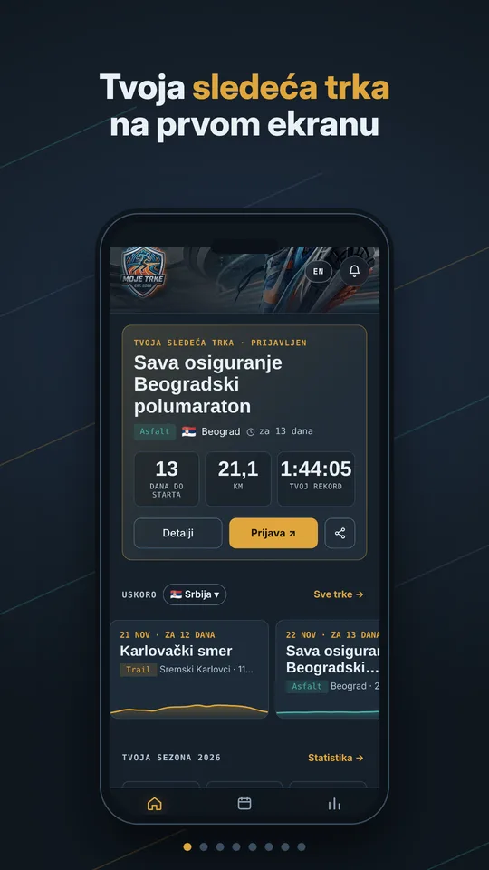
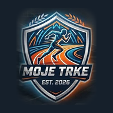

Sve trke na jednom mestu.
Every race in one place.
Kalendar sa 900+ trka iz 40+ zemalja: asfalt, trail, ultra, OCR i triatlon. Označi trku, dobij podsetnik, upiši vreme i prati lične rekorde.
A calendar of 900+ races from 40+ countries: road, trail, ultra, OCR and triathlon. Mark a race, get a reminder, log your time and track your personal bests.
Bez naloga i registracije. Tvoji podaci ostaju na tvom telefonu.
No account, no sign-up. Your data stays on your phone.

Šta sve možeš
What you can do
Aplikacija pravljena za trkače koji žele da imaju pregled sezone, a ne deset otvorenih sajtova.
Built for runners who want an overview of their season instead of ten open websites.
Kalendar trka
Race calendar
Trke iz Srbije, regiona i Evrope sa datumom, gradom, dužinama i visinskom razlikom.
Races from Serbia, the Balkans and Europe with date, city, distances and elevation gain.
Filteri i pretraga
Filters and search
Trail ili asfalt, zemlja, mesec, dužina. Nađeš svoju trku za par sekundi.
Trail or road, country, month, distance. Find your race in seconds.
Podsetnici
Reminders
Označi da te trka zanima ili da si prijavljen, a aplikacija te podseti pre starta.
Mark a race as interested or registered and the app reminds you before the start.
Vremena i lični rekordi
Times and personal bests
Upiši vreme i plasman posle trke. Tempo i lični rekord se računaju sami.
Log your time and placing after the race. Pace and personal bests are calculated for you.
Statistika sezone
Season stats
Broj trka, pretrčani kilometri, visinski metri i trke po tipu za celu sezonu.
Races, kilometres, elevation and races by type across the whole season.
Podeli sa prijateljima
Share with friends
Napravi sliku sledeće trke ili svoje statistike i pošalji je na Instagram, Viber ili WhatsApp.
Create an image of your next race or your stats and post it to Instagram, WhatsApp or anywhere.
Kako izgleda
How it looks
Prevuci levo-desno da vidiš ekrane aplikacije.
Swipe to see the app's screens.
Za 30 sekundi
In 30 seconds
Kratak pregled aplikacije.
A quick tour of the app.
Kreni za minut
Start in a minute
Nema naloga, lozinke ni prijave.
No account, password or sign-in.
Instaliraj
Install
Preuzmi Moje trke sa Google Play-a.
Get Moje trke from Google Play.
Izaberi trke
Pick your races
Označi šta te zanima i gde si prijavljen.
Mark what interests you and where you're registered.
Trči i upiši
Run and log
Posle trke upiši vreme i gledaj kako sezona raste.
After the race, log your time and watch your season grow.
Česta pitanja
FAQ
Da li je aplikacija besplatna?Is the app free?
Da. Aplikacija je besplatna, a prikazuje mali reklamni baner na dnu ekrana.
Yes. The app is free and shows a small ad banner at the bottom of the screen.
Treba li mi nalog?Do I need an account?
Ne. Tvoje trke, vremena i podešavanja čuvaju se samo na tvom telefonu. Možeš da napraviš rezervnu kopiju i prebaciš je na novi telefon.
No. Your races, times and settings are stored only on your phone. You can export a backup and move it to a new phone.
Kako se dodaju nove trke?How are new races added?
Kalendar se osvežava svake nedelje i nove trke stižu same, bez ažuriranja aplikacije. Trku koje nema možeš da dodaš i sam.
The calendar refreshes every week and new races arrive automatically, without an app update. You can also add a race yourself.
Ima li verzija za iPhone?Is there an iPhone version?
Za sada samo Android.
Android only for now.
Nedostaje trka ili je podatak pogrešan?A race is missing or wrong?
Javi nam na srdjanstojnic@gmail.com ili preko dugmeta za utisak u aplikaciji.
Let us know at srdjanstojnic@gmail.com or use the feedback button in the app.

Tvoja sledeća trka te čeka
Your next race is waiting
Preuzmi Moje trke i planiraj sezonu.
Get Moje trke and plan your season.